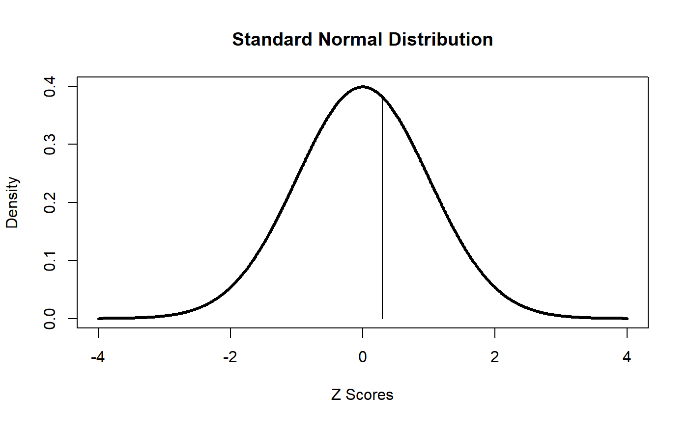
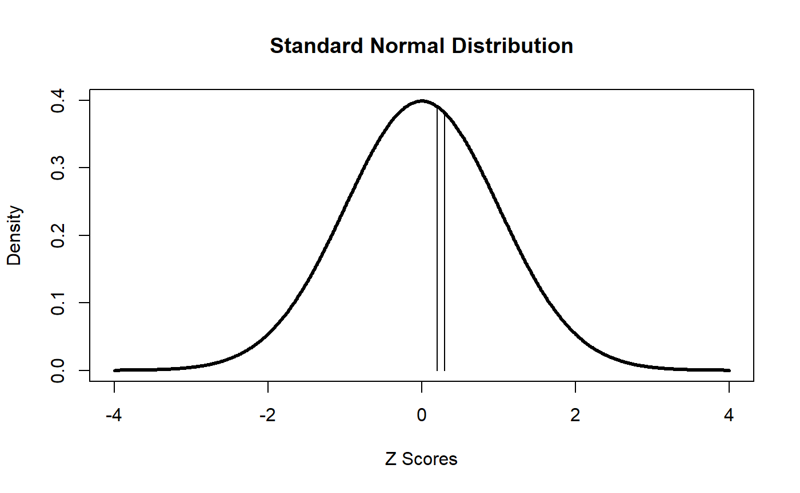

Bernoulli-Events.RmdBernoulli events have just two potential outcomes, often referred to as “success” or “failure”. (You need to consider these terms loosely. For example, if working with polling data, one candidate would consider voting a certain way as a success whereas the other candidate would certainly consider it a failure.)
A Bernoulli probability distribution is the simplest type of probability distribution.
Here is a Bernoulli distribution for \(\pi\) = 0.7.
bern_plot(0.7)A probability distribution based on a discrete event is the same as a density distribution. That is, the density and the probability are identical. Here is the density for x = 0 (a failure) when \(\pi\) = 0.7. Note that it is identical to the probability of a failure.
dbern(0, 0.7)
#> [1] 0.3This is different than the probability and density with continous distributions. The probability of any single value of a continuous distribution is 0. When we look at a plot for a continuous distribution, we are looking at a density plot, with potential values of the variable as the horizontal dimension and density as the vertical dimension. Here’s the density plot for the standard normal distribution. Note the function “dnorm” in the code. This is short for “density for the normal distribution.”
In order to find probability for values on a continuous distribution, we must take a range of values in a continuous distribution. For example, here is the probability of obtaining a value between 0.2 and 0.3 on the standard normal distribution.
The pnorm function provides us the “cumulative probability” up to the specified value. Thus, the “pnorm(0.3)” gives us the area on the density curve that is below 0.3.
pnorm(0.3)
#> [1] 0.6179114
s <- seq(-4,4,.01)
plot(s, dnorm(s), type="l", lwd = 3, ylim = c(0,0.4),
xlab = "Z Scores", ylab = "Density", main = "Standard Normal Distribution")
segments(x0 = 0.3, y0 = 0, x1 = 0.3, y1 = dnorm(0.3))
By subtracting the cumulative probability of one score from a second score, we can obtain the probability of obtaining a score between these two scores.
pnorm(0.3)
#> [1] 0.6179114
pnorm(0.2)
#> [1] 0.5792597
pnorm(0.3) - pnorm(0.2)
#> [1] 0.03865171
s <- seq(-4,4,.01)
plot(s, dnorm(s), type="l", lwd = 3, ylim = c(0,0.4),
xlab = "Z Scores", ylab = "Density", main = "Standard Normal Distribution")
segments(x0 = 0.2, y0 = 0, x1 = 0.2, y1 = dnorm(0.2))
segments(x0 = 0.3, y0 = 0, x1 = 0.3, y1 = dnorm(0.3))
When we run a cumulative probability function for a continuous distribution, behind the scenes the function is using numerical integration to calculate the area under the curve. This is something you learn about in a calculus class. One reason that nonparametric statistical analysis can be considerably easier than traditional parametric analysis is that we work with discrete values, so we can do probability calculations with simple arithmetic since the probability is the same as the density.
Here’s the cumulative probability for x = 1 on the Bernoulli distribution.
pbern(1, 0.7)
#> [1] 1The cumulative probability for x = 1 is found by summing the individual probabilities for x = 0 and x = 1. In short, this tells us that when the only outcomes possible are a success and a failure, the chance of obtaining one of these in a Bernoulli event is 100%.
The general term for a score in a distribution (pictured on the horizontal axis for a graph of a density distribution) is “quantile”. Quantile functions are the opposite of cumulative probability functions. We submit the cumulative probability and the function will tell us what quantile has that cumulative probability. Recall that the cumulative probability for 0.3 on the standard normal distribution is 0.6179114.
qnorm(0.6179114)
#> [1] 0.2999999Here is the quantile for the cumulative probability of 0.3 on a Bernoulli distribution with a probility of success of 0.7.
qbern(0.3, 0.7)
#> [1] 0Here is the quantile for the cumulative probability of 0.7 on a Bernoulli distribution with a probility of success of 0.7.
qbern(0.7, 0.7)
#> [1] 1What is the quantile for the cumulative probability of 0.5 on a Bernoulli distribution with a probility of success of 0.7. This can be confusing because there are only two quantiles on the Bernoulli distribution. One characteristic of discrete distributions is that not every cumulative probability relates in a one-to-one fashion with a quantile, like it does on a continuous distribution. Quantiles are often defined as the smallest value of x on the distribution such that the cumulative probability to x is at least the specified probability. For example, if we want the quantile corresponding to a cumulative probability of 0.5 on the Bernoulli distribution, we need to find the smallest quantile that has a cumulative probability of at least 0.5.
qbern(0.5, 0.7)
#> [1] 1In R there are functions for density (d), cumulative probability (p), and quantiles (q) for many distributions. We have looked at dnorm, pnorm, qnorm, dbern, pbern, and qbern. By default, the p and q functions are based on accumulating from the lower tail, but we can switch that to the upper tail by setting lower.tail = FALSE.
R also has (r) functions for many distributions (e.g., rnorm and rbern). These provide us a specified number of randomly seleted values from the corresponding distribution. These are known as “random variates”. This will be very handy when we study concepts such as Monte Carlo methods.